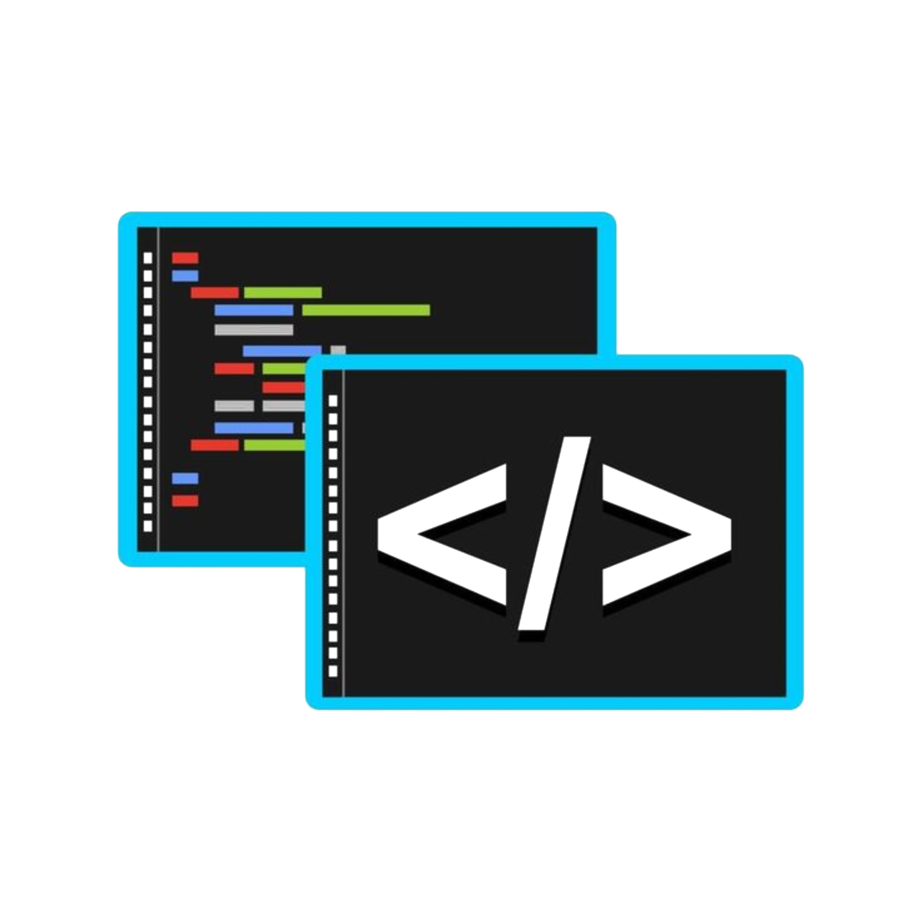
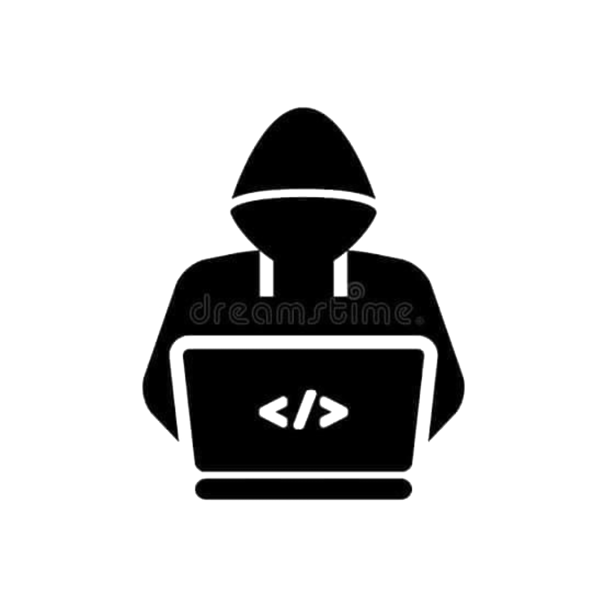

🔐Definisi
- Mengenal proteksi ganda dengan Port Knocking dan SSH Key untuk mengamankan akses manajemen router.
- informasi lebih lanjut
Penerapan Port Knocking dan SSH Key Authentication sebagai Proteksi Ganda pada Manajemen Router.

